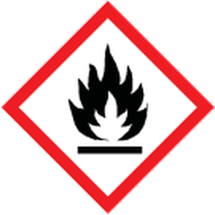

Labsertifikat: er du klar for første lab?
Før du får jobbe på laben, må du vise at du kan de viktigste sikkerhetsreglene. Svar på alle spørsmålene. Du har bestått når du har alt riktig. Får du noe galt, leser du forklaringen og trykker «Prøv igjen».
Del 1: Quiz
Når skal du ha på vernebriller på laben?
- Bare når du heller syre eller lut
- Bare når læreren sier det
- Hele tiden mens du er på laben, også når du ikke selv holder på med et forsøk
Sprut kan komme fra forsøket til sidemannen. Øynene tåler svært lite, og skadene kan bli varige.
Du er tørst midt i en labøkt. Hva gjør du?
- Drikker fra flasken din, men holder den unna kjemikaliene
- Går ut av laben, vasker hendene og drikker der
- Drikker vann fra kranen på laben
Mat og drikke er forbudt på laben. Kjemikalier kan havne i flasken eller på hendene og videre i munnen.
Hvordan suger du væske opp i en pipette?
- Med munnen, forsiktig
- Med peleusball eller pipettepumpe
- Med munnen, men bare når væsken er vann
Du pipetterer aldri med munnen. Du kan få væske i munnen, og vanen kan føre til at du en dag gjør det med et farlig stoff.
Du skal fortynne konsentrert syre. Hva gjør du?
- Heller vann i syren
- Heller syren langsomt i vannet
- Det spiller ingen rolle hva du heller i hva
Først vann, så syre. Fortynningen utvikler mye varme. Heller du vann i konsentrert syre, kan blandingen koke opp og sprute.
Du har laget en løsning som skal brukes neste time. Hva skal stå på flasken?
- Bare navnet ditt
- Bare navnet på stoffet
- Innhold, konsentrasjon, dato, hvem som har laget den og farepiktogram hvis løsningen er farlig
En umerket eller dårlig merket flaske kan forveksles. Den som finner den, må vite hva den inneholder og hvor farlig den er.
Hva gjør du før hver labøvelse?
- Ingenting, læreren forklarer alt underveis
- Leser fremgangsmåten og risikovurderingen, sjekker sikkerhetsdatabladet og finner nødutstyret
- Henter alle kjemikaliene, så går det raskere
Du må vite hva som kan gå galt og hva du gjør da, før du begynner. Er du usikker, spør du læreren.

Hva betyr dette farepiktogrammet?- Stoffet er etsende
- Stoffet er brannfarlig
- Stoffet er giftig
Flammen betyr brannfarlig. Stoffet kan antennes og må holdes unna åpen flamme og andre tennkilder.
Du skal varme opp en brannfarlig væske, for eksempel etanol. Hva bruker du?
- Bunsenbrenner, men med liten flamme
- Varmeplate eller vannbad, og ingen åpen flamme i nærheten
- Bunsenbrenner, hvis du står i avtrekksskapet
Damp fra brannfarlige væsker kan nå en flamme flere desimeter unna og antennes. Bruk varmekilder uten åpen flamme.
Du arbeider i avtrekksskapet. Hvor skal frontluken stå?
- Helt oppe, så du ser godt
- Så lavt som mulig, og aldri over merket arbeidshøyde
- Det spiller ingen rolle så lenge viften går
Jo lavere luken står, jo raskere går luften inn i skapet, og jo bedre holdes gassene inne. Luken beskytter deg også mot sprut.
Sidemannen din får kjemikalier i øyet. Hva gjør du først?
- Leter opp sikkerhetsdatabladet
- Fører personen straks til øyeskyllen og hjelper til med å skylle, og roper på læreren
- Ber personen gni seg forsiktig i øyet
Tiden er det viktigste. Skyll straks i minst 15 minutter, og hold øyelokkene åpne. Andre kan hente læreren og databladet imens.
Du søler syre på buksa. Hva gjør du?
- Tørker av med papir og jobber videre
- Venter og ser om det begynner å svi
- Sier fra, tar av det tilsølte tøyet og skyller huden med mye vann
Syre i tøyet ligger inntil huden og fortsetter å virke. Ved større søl bruker du nøddusjen.
En kolbe går i stykker på benken. Hvor skal glasskårene?
- I vanlig søppel, pakket inn i papir
- I egen beholder for glassavfall, etter at du har sagt fra til læreren
- I vasken, så skylles de bort
Glass i vanlig søppel kan skade den som tømmer det. Var det kjemikalier i kolben, må sølet tas hånd om først.
Du har en rest av en løsning med kobbersulfat etter forsøket. Hva gjør du med den?
- Heller den i vasken med mye vann
- Heller den i restflasken som læreren har vist deg
- Heller den tilbake i flasken den kom fra
Tungmetaller som kobber er skadelige for livet i vann og skal ikke i avløpet. Rester heller du aldri tilbake i originalflasken, for da kan hele flasken bli forurenset.
Det skjer et lite uhell. Ingen ble skadet, og du rydder selv. Skal du si fra?
- Nei, det gikk jo bra
- Ja, alltid. Læreren skal vite om alle uhell, også små
- Bare hvis noe ble ødelagt
Et uhell der det gikk bra, er en nesten-ulykke. Den er en gratis advarsel: årsaken kan rettes før noen blir skadet neste gang.
Hvor i sikkerhetsdatabladet finner du førstehjelpen for et stoff?
- Seksjon 1
- Seksjon 4
- Seksjon 16
Seksjon 4 handler om førstehjelp. Seksjon 2 viser faremerkingen, og seksjon 8 viser hvilket verneutstyr du trenger.
Del 2: Vis læreren på laben
Quizen viser at du kan reglene. På laben viser du læreren at du vet hvor alt er. Kryss av når du har gjort det.
- Jeg har vist læreren hvor øyeskyllen og nøddusjen er, og vet hvordan de brukes.
- Jeg har vist hvor brannteppet, brannslukningsapparatet og førstehjelpsutstyret er.
- Jeg har vist hvor rømningsveien går og hvor møteplassen er.
- Jeg har vist hvor sikkerhetsdatabladene finnes.
- Jeg har vist hvor restflaskene og beholderen for glassavfall står.
- Jeg har tatt på labfrakk og vernebriller riktig, og satt opp langt hår.
Kommer: skolens egne labregler og bilder av nødutstyret på laben.
Labsertifikatet viser at du kan grunnreglene. Det erstatter ikke risikovurderingen før hver øvelse. Er du usikker på noe, spør du læreren før du begynner.
Les mer
Om kildene: Teksten på denne siden er laget for dette nettstedet. Siden bygger på undervisningsopplegg i kjemiprosess- og laboratoriefag ved Sauda vgs, som er utarbeidet med utgangspunkt i blant annet Kjemien stemmer, Laboranten og åpne nettkilder.